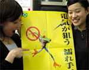
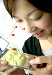
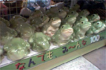
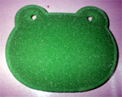
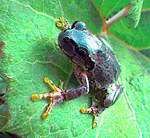
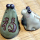
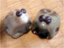

水濡れカエルは感電注意！ 【福岡発PLINK様】電気が狙う濡れ手汗！カエラーのみなさん。感電しないように注意しましょう。感電事故防止のポスターに、カエル君が採用されて、あちこちの、電気関連業界の現場に貼り出されています。カエラーのみなさんも感電事故を防ぐために、絶縁手袋をつけて仕事をしましょうね。 先着２名にカエルポスタープレゼント！【全国かえる奉賛会】プリンク様から３枚いただいた貴重なカエルポスターを先着２人の人にプレゼントするから、希望者がいたら大王へのメールをくれえええええええええい。すぐに送るぞ！大王は会社に張っています。職場にはると、このようにみんなが笑顔になるのです。感電事故もふせげるし、カエル効果は抜群だあああ。
 ハリーポッターかえるチョコをゲット！【福岡発すみ同志記者とナイアガラ様】ハリーポッターのカエルチョコが出ているのを知ってますよね。ホワイトチョコなんで、ほんとは、抹茶とかまぜて緑にしてほしいんだけど、平面カエルみたいな薄型かえるがチョコになっているんです。カエラーの悩みとしては、手にしてもなかなか食べることができないことかな。
なんでも１００円でカエル！ 【千葉発かえるひとすじ４０年！かえるは地球を救う！！ケロリカ同志記者】大王様におかれましてはお変わりなく日々をお過ごしのことと思います。昨今、生活に追われ仕事に追われ、かえる様とのふれあいも無い、乾いた毎日でございましたが、なんと。かえる様方は一般庶民の貧相な暮らしなどどこ吹く風、とばかりに、堂々とその勢力を伸ばしつつあったのでございます。 ああ、かえる様の生きざまを見習わなければ。と改めて思い知らされた出会いでございました。
カエルグッズ専門１００円ショップの出現を待つ！【全国かえる奉賛会】ダイソー様。全国カエラーが至福の時間を過ごすために、カエルグッズ専門の１００円ショップを作ってくれええええ。以前から１００円商品の中にたくさんのカエルグッズをみかけていたので、いつかは、このような光景になるのかなあああって、思っていたら『なんでも、ぜーんぶ１００円！』とカエルを勢ぞろいさせるなんてうれしいではないかあああああああああああ。ちびた石けん生きカエル！ 【福岡発ヒラヤス様】先日、ホームセンターへ行った時、主人（kazoo）が見つけたカエルグッズを紹介します。その名も『石けん生きカエル』です。石けんって小さくなったら使いにくいですよね？うちの台所用洗剤は「シャボン玉石けん」を愛用してるのでこんな商品があればなーと思っていたところでした。小さくなったり固くなった石けんを最後まで使い切る！このキャッチコピーとカエルの可愛さに惚れ込んで買ってしまいました。
 今月のカエル様！【千葉発かえるひとすじ４０年！かえるは地球を救う！！ケロリカ同志記者】今春青森で遭遇したアマガエル様の御尊影をお送り致します。でわ。
蓮池さんカエルの威力で無事カエル！【日本発けろひめ様】けろひめと申します。日本全国さまざまなところで「けろ烈」している(?)かえるパワーに幸せを感じる毎日です。ところで、最近テレビでは拉致家族の報道がめじろ押しですが、その中で蓮池さん宅のかえるの置き物の話を耳にしました。蓮池さんのお宅では薫さんが帰って来るようにとかえるの置き物に願をかけているうちに、たくさんたまってしまったとのこと。かえるたちはこんなところでも活躍していたのだと知り、何かじーんとしてしまいました。 日本テレビかテレビ朝日のワイドショーで紹介していたのですが、さだかではありません。映像としても紹介されていませんが?一応、御報告します。
【全国かえる奉賛会】蓮池さんというお名前を聞いたときから、なんてーカエルチックなお名前なのであろうか。無事でいてほしいぞおおおおおって思っていました。カエルに願かけしていたんですね。蓮池さんはパソコン講習を受けているとのこと。いつか、かえる新聞も見に来てくれるといいなあああああああああ。
 福の字背負った福カエル！ 【福岡発げこげこ大王七世直筆】筑豊に遊びにいったときに見つけた、小さなカエル陶器です。背中に「福」の字を背負ってて可愛いんだよね。これから冬に向かうしさ。あったかい気持ちでいようぜ。寄り添う２匹の福カエルが素敵でしょ！【福岡発げこげこ大王七世直筆】うわあああああああああい。富山から、鳥獣戯画コートが届いたぜええええ。カエル展で出展された鳥獣戯画柄のコートを男性用に、『わたしにもつくってくださああああああい』と注文していたものなんだよね。どこでデビューを飾ろうかな。 もっか楽しみなんです。鳥獣戯画って、素晴らしい作品ですよね。うさぎと、さると、いのししと、かえる。干支に入っていないのは、カエルだけなんだけど、鳥獣戯画の中では、カエルたちが最強キャラクターなのです。なぜなんだろ、それって作者の思い入れ！それとも、カエルがやっぱ最高ってことかな
いったいどんなコートなのか、その公開はいよいよ１１月３０日に迫っています！！みんなカエル新聞の更新を見のがすなよおおおおおおおっ！！
投稿採用者に武功カエル徽章を授与！ |


かえる古新聞過去に取り上げた記事を見出し付きで一覧したい人は、ここをクリック◆創刊号を見る◆先週号を見る◆話題の号を見る◆かえる新聞の昔を読む
|
私も入っています。。全国かえる奉賛会
大王様に会うには、このバナーをクリック。ずっと奥に写真館があるぞ。全国かえる奉賛会に入会するには、自分のホームページのどこかに、下の部分を追加するとバナーがリンク付きで表示されるぞ。どんどん入会しましょー |


|